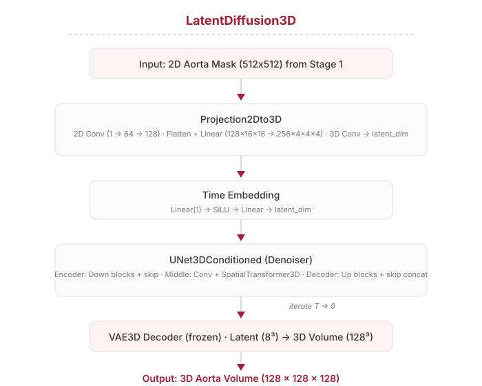
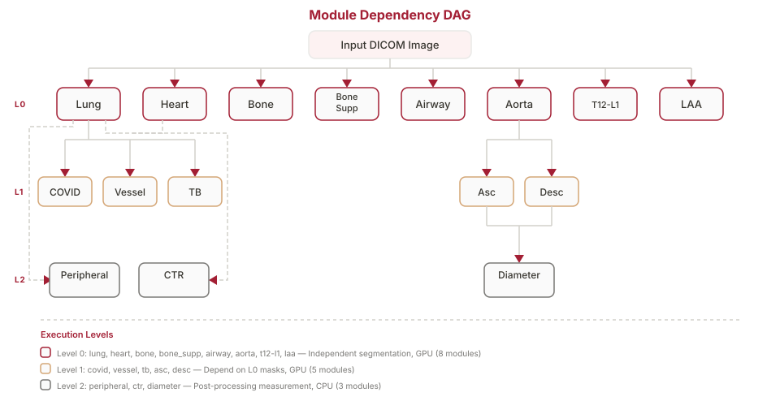
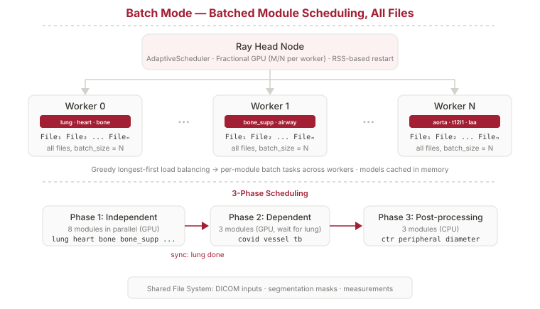
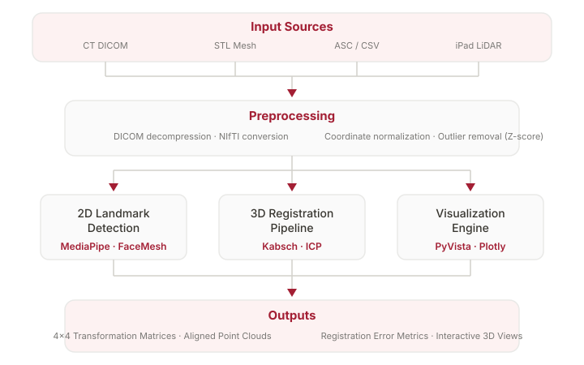
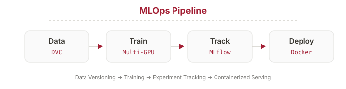

Overview
AI Research Engineer at Medical IP — bridging academic research and industrial engineering across five production projects.
- DeepCatch X Diffusion, Ray pipeline, BioAge, refactoring
- EVD Navigation 3D landmarks, Kabsch+ICP, 2 patents
- LLM De-ID & Translation 98% PHI detection, multi-agent
- DeepCatch M MRI segmentation + MLOps
Aggregate Impact
DeepCatch X
The Problem: X-ray Aorta Extraction
Clinical Need
Aortic disease screening from chest X-rays requires extracting the aorta structure. The initial approach used GANs.
Why GANs Failed
- Mode collapse: generator produces limited variations
- Training instability: adversarial dynamics are fragile
- Artifacts: hallucinated structures that could cause clinical misinterpretation
The Pivot
Diffusion models learn a stable denoising process — no adversarial training, better sample diversity, and controllable generation quality.

DDPM: Architecture & Training
Stage 1: Conditional DDPM
- Conditional channel concatenation (X-ray RGBA + noise)
- U-Net backbone with self-attention, time embedding, ResNet blocks
- Hybrid loss: weighted MSE + perceptual (VGG) + SSIM + L1
- DDIM fast sampling for inference (50 steps)
Training at Scale
- DDP across 4x RTX 4090 GPUs
- Gradient accumulation for effective large batch size
- Ablation studies: conditioning mechanism, attention placement, noise schedule
Stage 2: Proposed LDM
Proposed Latent Diffusion Model for 3D volumetric reconstruction. Operates in compressed latent space (16x compression per dimension).
- VAE3D: 128³ volumes → 256-dim latent
- Projection2Dto3D: novel 2D→3D bridge network
- UNet3DConditioned: 3D denoiser with time conditioning
Architecture fully designed and coded; training pending compute resources.
GTC 2025 & Takeaway
NVIDIA GTC 2025 Showcase
Showcased DeepCatch X at NVIDIA GTC 2025 in San Jose, demonstrating novel generative AI applications in medical imaging to a global audience of researchers, engineers, and healthcare professionals.

Results
- Superior fidelity to GANs for aorta extraction
- Stable training with no mode collapse
- Clinically usable output quality
- Real-time inference via DDIM (50 steps)
"Picking the right model family matters more
than tuning the wrong one."
Ray Distributed Inference Pipeline
Problem
14 AI modules with complex DAG dependencies. Sequential execution wastes GPU cycles. Hospitals have heterogeneous hardware.
Solution
- Ray actors with GPU memory persistence
- DAG scheduler with dependency resolution + parallel execution
- Zero-copy data sharing via Apache Arrow Object Store
- Hardware-aware: TensorRT, ONNX, FP16
Results


Refactoring & Deployment
Codebase Refactoring
Nuitka: Python → Executable
Hospitals need standalone executables — no Python, no IT support. Nuitka compiles Python + PyTorch + CUDA into a single binary.
- Refactoring was a prerequisite for compilation
- CdsPyEncrypt for IP protection
- Model optimization: TensorRT, ONNX, FP16
Results
BioAge: R → C++
Challenge
Biological age estimation algorithm in R. Production needs: no R runtime, sub-ms latency, thread safety, LibTorch integration.
The Hard Part
- Normative modeling: Mahalanobis distance from healthy reference population
- Banker's rounding (IEC 60559): R uses "round half to even" — C++ doesn't by default
- All statistical parameters embedded as compile-time constants
- 1,850+ lines of production C++
Results
Output
- Biological age per organ
- Deviation scores, percentile rankings
- Risk categories + recommendations
1.8mm From the Brain
3D Face Landmarks & AR Registration
EVD Surgical Navigation
External Ventricular Drainage — a critical neurosurgical procedure requiring precise catheter placement. Millimeters matter.
Pipeline
- CT → Skin Segmentation (deep learning)
- 2D Landmark Detection (MediaPipe, 468 points)
- Ray Tracing to project 2D → 3D surface
- Kabsch: SVD-based closed-form rotation + translation
- ICP: Point-to-plane iterative refinement
- iOS ARKit for real-time iPad Pro overlay

EVD: Results & Impact
Key Challenges Solved
- Coordinate alignment: CT scanner vs. iPad LiDAR use different systems
- Noise handling: LiDAR point clouds filtered via Z-score
- Scale differences: Medical STL + LiDAR scans normalized
- Cross-platform: Algorithms adapted for ARKit (iOS) with real-time performance
Results
Patents
- AR auto registration method (10-2025-0107691)
- AR manual registration method (10-2025-0107692)
Collaboration
Developed the algorithms in Python, then collaborated with iOS developers to adapt and optimize for mobile AR platforms.
"Classical algorithms + deep learning
is more powerful than either alone."
LLMs Need Guardrails
Multi-modal PHI De-Identification
The Problem
Medical data has PHI everywhere — DICOM metadata, burned-in text on images, handwritten annotations. One miss = HIPAA violation.
Two-Pronged Approach
- Metadata: LLM parses DICOM headers → identifies PHI fields → generates anonymized mappings
- Burn-in text: OCR extracts regions → NER classifies PHI vs. non-PHI → pixel-level black mask over PHI
Results

Multi-Agent Translation System
Multilingual Pipeline
Korean → 5 target languages for international regulatory submissions. Medical terminology must be consistent across documents.
Multi-Agent Workflow
- Translator: Initial translation with domain context
- Reviewer: Quality check against glossary
- Fixer: Corrects terminology and consistency issues
- Supervisor: Final validation and approval
Quality Guardrails
- Translation Memory (SQLite) for consistency + cost reduction
- Hallucination detection: statistical checks for numerical consistency, entity preservation
Scope
"LLMs are powerful but need engineered guardrails
in safety-critical domains."
Reproducibility Is Not Optional
DeepCatch M: MLOps Pipeline
Problem
Medical imaging ML requires strict reproducibility and audit trails for regulatory compliance. Ad-hoc workflows meant: can't reproduce results, can't deploy reliably, can't pass regulatory review.
Pipeline Architecture
- DVC: Git-like versioning for large medical datasets
- MLFlow + W&B: Experiment tracking (metrics, params, artifacts)
- Ray Tune: ASHA scheduler for hyperparameter optimization
- FastAPI + Docker: REST API serving with health checks
- HuggingFace Hub: Automated model publishing with model cards

Systematic Model Comparison
Architecture Search
The pipeline enabled systematic comparison of segmentation architectures for multi-organ MRI (Subcutaneous Fat, Abdominal Visceral Fat):
- U-Net: Baseline encoder-decoder (~7.8M params)
- U-Net++: Dense nested skip pathways (~9.2M params)
- nnU-Net: SOTA with residual blocks, instance norm, deep supervision (~31M params)
Key Design Decision
Hybrid architecture: Native GPU training for performance, Docker-based serving for portability and reliability.
What the Pipeline Enables
- Full experiment reproducibility with one command
- Automated train-to-deploy with audit trail
- Systematic hyperparameter search (ASHA scheduler)
- Model versioning and rollback
- Monitoring and alerting (Grafana)
"In regulated industries, the experiment you can't
reproduce is the experiment that didn't happen."
Impact Summary
Consistent pattern: Identifying ambiguous problems, designing principled solutions, and delivering measurable production impact.
Every project ships — research prototypes become production systems with regulatory compliance and documented results.
What I'm Looking For
Thank You
Let's build something impactful together.